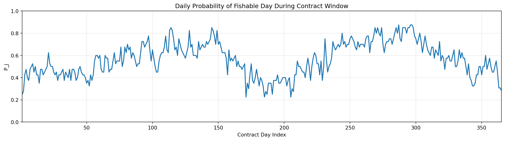
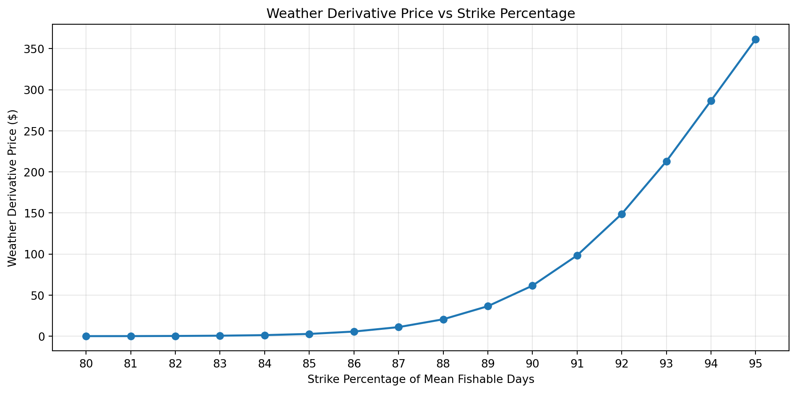

import pandas as pd
import numpy as np
import matplotlib.pyplot as plt
import seaborn as sns
FISHING_PATH = "../data/stx_com_csl_daily_8623.csv"
WIND_PATH = "../data/st_croix_wind_data.csv"
WAVE_PATH = "../data/st_croix_wave_data.csv"
POPULATION_PATH = "../data/usvi_pop.csv"Appendix E — poisson_binomial
Poisson-binomial using daily historical 𝑃𝑗 (Strike in Percent)
E.1 Import Packages and Set File Paths
E.2 Historical Data Window and User Inputs
START_DATE = "1985-01-01"
END_DATE = "2024-12-28"
MS_TO_KNOTS = 1.94384449
POP_SCALE = 1000
RISK_FREE_RATE = 0.037
AVG_PROFIT_PER_DAY = 330.0
# CHOSEN FDI THRESHOLDS
WIND_THRESHOLD_MS = 8.5
WAVE_THRESHOLD_M = 1.75
CONTRACT_START_MMDD = "01-01"
CONTRACT_END_MMDD = "12-31"
# THRESHOLD SENSITIVITY GRID
wind_thresholds = [7.5, 8.5, 10.0, 11.5, 13.0]
wave_thresholds = [1.5, 1.75, 2.0, 2.25, 2.5]
# STRIKE GRID
STRIKE_PERCENTS = np.round(np.arange(0.80, 0.951, 0.01), 2)E.3 LOAD DATA AND SENSITIVITY ANALYSIS
# LOAD DATA
df_fishing = pd.read_csv(
FISHING_PATH,
parse_dates=["date"],
date_format="%m/%d/%Y"
)
df_fishing = df_fishing[["date", "weekday", "n_trips", "n_csl_trips", "all_all", "csl_all"]].copy()
df_wind = pd.read_csv(WIND_PATH, parse_dates=["valid_time"])
df_wind = df_wind[["valid_time", "u10", "v10", "fg10"]].copy()
df_wave = pd.read_csv(WAVE_PATH, parse_dates=["valid_time"])
df_wave = df_wave[["valid_time", "swh"]].copy()
df_pop = pd.read_csv(POPULATION_PATH, parse_dates=["observation_date"])
df_pop = df_pop.rename(columns={
"observation_date": "year",
"POPTOTVIA647NWDB": "population"
})
df_pop["year"] = df_pop["year"].dt.year# BUILD DAILY MASTER TABLE
dates = pd.date_range(start=START_DATE, end=END_DATE, freq="D")
df_calendar = pd.DataFrame({"date": dates})
df_calendar["year"] = df_calendar["date"].dt.year
df_calendar["weekday"] = df_calendar["date"].dt.day_name()
df_calendar["is_sunday"] = (df_calendar["weekday"] == "Sunday").astype(int)
df_calendar["date"] = pd.to_datetime(df_calendar["date"], format="%m/%d/%Y")
df_fishing["date"] = pd.to_datetime(df_fishing["date"], format="%m/%d/%y")
df_master = df_calendar.merge(df_fishing, on=["date", "weekday"], how="left")
for col in ["n_trips", "n_csl_trips", "all_all", "csl_all"]:
df_master[col] = df_master[col].fillna(0)F PROCESS WIND
df_wind["wind_speed_ms"] = np.sqrt(df_wind["u10"]**2 + df_wind["v10"]**2)
df_wind["date"] = df_wind["valid_time"].dt.normalize()
df_wind_daily = (
df_wind.groupby("date")
.agg(
max_wind_ms=("wind_speed_ms", "max"),
mean_wind_ms=("wind_speed_ms", "mean"),
max_gust_ms=("fg10", "max")
)
.reset_index()
)G PROCESS WAVE
df_wave["date"] = df_wave["valid_time"].dt.normalize()
df_wave_daily = (
df_wave.groupby("date")
.agg(
max_swh_m=("swh", "max"),
mean_swh_m=("swh", "mean")
)
.reset_index()
)H MERGE ALL
df_master = df_master.merge(df_wind_daily, on="date", how="left")
df_master = df_master.merge(df_wave_daily, on="date", how="left")
df_master = df_master.merge(df_pop[["year", "population"]], on="year", how="left")
df_master["csl_trips_per_1k"] = (
(df_master["n_csl_trips"] / df_master["population"]) * POP_SCALE
)
df_master["csl_lbs_per_1k"] = (
(df_master["csl_all"] / df_master["population"]) * POP_SCALE
)# THRESHOLD SENSITIVITY
sensitivity_rows = []
for wnd in wind_thresholds:
for wav in wave_thresholds:
fdi_temp = ((df_master["max_wind_ms"] <= wnd) &
(df_master["max_swh_m"] <= wav)).astype(int)
annual_temp = (
pd.DataFrame({
"year": df_master["year"],
"fdi_temp": fdi_temp
})
.groupby("year")
.agg(
annual_fdi=("fdi_temp", "sum"),
pct_fishable=("fdi_temp", lambda x: x.mean() * 100)
)
.reset_index()
)
sensitivity_rows.append({
"wind_thresh_ms": wnd,
"wind_thresh_kt": wnd * MS_TO_KNOTS,
"wave_thresh_m": wav,
"pct_fishable_total": fdi_temp.mean() * 100,
"mean_annual_fdi": annual_temp["annual_fdi"].mean(),
"std_annual_fdi": annual_temp["annual_fdi"].std()
})
df_sensitivity = pd.DataFrame(sensitivity_rows)
print("\nThreshold Sensitivity Table:")
print(df_sensitivity.round(2).to_string(index=False))
Threshold Sensitivity Table:
wind_thresh_ms wind_thresh_kt wave_thresh_m pct_fishable_total mean_annual_fdi std_annual_fdi
7.5 14.58 1.50 33.35 121.80 21.29
7.5 14.58 1.75 34.56 126.20 22.23
7.5 14.58 2.00 34.83 127.18 22.17
7.5 14.58 2.25 34.87 127.35 22.18
7.5 14.58 2.50 34.91 127.48 22.23
8.5 16.52 1.50 52.69 192.42 21.70
8.5 16.52 1.75 56.67 206.95 23.95
8.5 16.52 2.00 57.31 209.30 24.07
8.5 16.52 2.25 57.43 209.72 24.04
8.5 16.52 2.50 57.47 209.88 24.09
10.0 19.44 1.50 62.59 228.58 19.78
10.0 19.44 1.75 80.15 292.68 14.50
10.0 19.44 2.00 85.61 312.62 12.40
10.0 19.44 2.25 86.40 315.50 11.84
10.0 19.44 2.50 86.51 315.90 11.96
11.5 22.35 1.50 62.65 228.78 19.85
11.5 22.35 1.75 81.67 298.23 14.62
11.5 22.35 2.00 91.58 334.42 8.84
11.5 22.35 2.25 96.21 351.32 5.33
11.5 22.35 2.50 97.41 355.72 4.49
13.0 25.27 1.50 62.65 228.78 19.85
13.0 25.27 1.75 81.67 298.25 14.59
13.0 25.27 2.00 91.67 334.75 8.73
13.0 25.27 2.25 96.54 352.52 5.26
13.0 25.27 2.50 98.47 359.60 3.96# BUILD FINAL FDI
df_master["fdi"] = (
(df_master["max_wind_ms"] <= WIND_THRESHOLD_MS) &
(df_master["max_swh_m"] <= WAVE_THRESHOLD_M)
).astype(int)
print("\nSelected Thresholds:")
print(f"Wind threshold = {WIND_THRESHOLD_MS:.2f} m/s ({WIND_THRESHOLD_MS * MS_TO_KNOTS:.2f} knots)")
print(f"Wave threshold = {WAVE_THRESHOLD_M:.2f} m")
Selected Thresholds:
Wind threshold = 8.50 m/s (16.52 knots)
Wave threshold = 1.75 mI REMOVE FEB 29 FOR CALENDAR ALIGNMENT
df_prob = df_master.copy()
df_prob["date"] = pd.to_datetime(df_prob["date"])
df_prob = df_prob[
~((df_prob["date"].dt.month == 2) & (df_prob["date"].dt.day == 29))
].copy()
df_prob["month_day"] = df_prob["date"].dt.strftime("%m-%d")
calendar_365 = pd.date_range("2001-01-01", "2001-12-31", freq="D")
calendar_df = pd.DataFrame({
"contract_date_dummy": calendar_365,
"month_day": calendar_365.strftime("%m-%d"),
"day_of_year": np.arange(1, 366)
})J CONTRACT WINDOW
start_dummy = pd.to_datetime(f"2001-{CONTRACT_START_MMDD}")
end_dummy = pd.to_datetime(f"2001-{CONTRACT_END_MMDD}")
if start_dummy <= end_dummy:
contract_calendar = calendar_df[
(calendar_df["contract_date_dummy"] >= start_dummy) &
(calendar_df["contract_date_dummy"] <= end_dummy)
].copy()
else:
contract_calendar = calendar_df[
(calendar_df["contract_date_dummy"] >= start_dummy) |
(calendar_df["contract_date_dummy"] <= end_dummy)
].copy()
contract_calendar = contract_calendar.reset_index(drop=True)
contract_calendar["contract_day_index"] = np.arange(1, len(contract_calendar) + 1)
contract_days = len(contract_calendar)
contract_years = contract_days / 365.0
print("\nContract Window:")
print(f"Start (MM-DD): {CONTRACT_START_MMDD}")
print(f"End (MM-DD): {CONTRACT_END_MMDD}")
print(f"Contract length: {contract_days} days")
print(f"Contract length: {contract_years:.6f} years")
Contract Window:
Start (MM-DD): 01-01
End (MM-DD): 12-31
Contract length: 365 days
Contract length: 1.000000 yearsK DAILY FISHABLE PROBABILITY FOR CONTRACT DAYS ONLY
daily_prob_all = (
df_prob.groupby("month_day")
.agg(
p_fishable=("fdi", "mean"),
fishable_count=("fdi", "sum"),
n_years=("fdi", "count")
)
.reset_index()
)
daily_prob_contract = contract_calendar.merge(
daily_prob_all,
on="month_day",
how="left"
)
if daily_prob_contract["p_fishable"].isna().any():
raise ValueError("Some contract dates have missing fishable probabilities.")
expected_fishable_days_contract = daily_prob_contract["p_fishable"].sum()
print("\nContract Probability Summary:")
print(f"Expected fishable days during contract = {expected_fishable_days_contract:.2f}")
# CONTRACT-YEAR FDI FOR HISTORICAL YEARS
contract_month_days = set(contract_calendar["month_day"])
df_contract_only = df_prob[df_prob["month_day"].isin(contract_month_days)].copy()
annual_contract_fdi = (
df_contract_only.groupby("year")
.agg(
contract_fdi=("fdi", "sum"),
contract_days=("fdi", "count"),
pct_fishable=("fdi", lambda x: x.mean() * 100)
)
.reset_index()
)
mean_contract_fdi = annual_contract_fdi["contract_fdi"].mean()
std_contract_fdi = annual_contract_fdi["contract_fdi"].std()
print("\nContract FDI Summary:")
print(f"Mean contract FDI = {mean_contract_fdi:.2f} days")
print(f"Std contract FDI = {std_contract_fdi:.2f} days")
print(f"Average profit/day = ${AVG_PROFIT_PER_DAY:,.2f}")
Contract Probability Summary:
Expected fishable days during contract = 206.80
Contract FDI Summary:
Mean contract FDI = 206.78 days
Std contract FDI = 23.94 days
Average profit/day = $330.00L PLOT DAILY FISHABLE PROBABILITY
plt.figure(figsize=(14, 4))
plt.plot(
daily_prob_contract["contract_day_index"],
daily_prob_contract["p_fishable"],
linewidth=1.8
)
plt.title("Daily Probability of Fishable Day During Contract Window")
plt.xlabel("Contract Day Index")
plt.ylabel("P_j")
plt.xlim(1, contract_days)
plt.ylim(0, 1)
plt.grid(True, alpha=0.3)
plt.tight_layout()
plt.show()
M POISSON-BINOMIAL PMF
N ============================================================
p = daily_prob_contract["p_fishable"].to_numpy()
n = len(p)
pmf = np.zeros(n + 1)
pmf[0] = 1.0
for pj in p:
new_pmf = np.zeros(n + 1)
new_pmf[0] = pmf[0] * (1 - pj)
for k in range(1, n + 1):
new_pmf[k] = pmf[k] * (1 - pj) + pmf[k - 1] * pj
pmf = new_pmf
discount_factor = np.exp(-RISK_FREE_RATE * contract_years)
# MULTI-STRIKE PRICING TABLE || Trigger rule: payout when N < K
pricing_rows = []
for strike_percent in STRIKE_PERCENTS:
strike_days = int(round(mean_contract_fdi * strike_percent))
# Fixed payout size based on strike shortfall from mean
loss_amount = max(mean_contract_fdi - strike_days, 0) * AVG_PROFIT_PER_DAY
# Correct trigger rule: fishable days strictly below strike
# P(N < K) = sum from 0 to K-1
if strike_days <= 0:
trigger_probability = 0.0
else:
trigger_probability = pmf[:strike_days].sum()
weather_derivative_price = discount_factor * loss_amount * trigger_probability
pricing_rows.append({
"strike_percent": strike_percent * 100,
"strike_days": strike_days,
"fixed_payout_L": loss_amount,
"trigger_probability_P_N_less_K": trigger_probability,
"weather_derivative_price": weather_derivative_price
})
pricing_table = pd.DataFrame(pricing_rows)
print("\nPricing Table for Strike Percent 80% to 95%:")
print(
pricing_table.round({
"strike_percent": 0,
"strike_days": 0,
"fixed_payout_L": 2,
"trigger_probability_P_N_less_K": 6,
"weather_derivative_price": 2
}).to_string(index=False)
)
# PLOT - STRIKE % VS PRICE
plt.figure(figsize=(10, 5))
plt.plot(
pricing_table["strike_percent"],
pricing_table["weather_derivative_price"],
marker="o",
linewidth=1.8
)
plt.title("Weather Derivative Price vs Strike Percentage")
plt.xlabel("Strike Percentage of Mean Fishable Days")
plt.ylabel("Weather Derivative Price ($)")
plt.xticks(STRIKE_PERCENTS * 100)
plt.grid(True, alpha=0.3)
plt.tight_layout()
plt.show()
# PLOT - STRIKE % VS TRIGGER PROBABILITY
plt.figure(figsize=(10, 5))
plt.plot(
pricing_table["strike_percent"],
pricing_table["trigger_probability_P_N_less_K"],
marker="o",
linewidth=1.8
)
plt.title("Trigger Probability vs Strike Percentage")
plt.xlabel("Strike Percentage of Mean Fishable Days")
plt.ylabel("Trigger Probability")
plt.xticks(STRIKE_PERCENTS * 100)
plt.grid(True, alpha=0.3)
plt.tight_layout()
plt.show()
Pricing Table for Strike Percent 80% to 95%:
strike_percent strike_days fixed_payout_L trigger_probability_P_N_less_K weather_derivative_price
80.0 165 13785.75 0.000002 0.02
81.0 167 13125.75 0.000004 0.06
82.0 170 12135.75 0.000019 0.23
83.0 172 11475.75 0.000049 0.54
84.0 174 10815.75 0.000119 1.24
85.0 176 10155.75 0.000276 2.70
86.0 178 9495.75 0.000610 5.58
87.0 180 8835.75 0.001289 10.98
88.0 182 8175.75 0.002605 20.52
89.0 184 7515.75 0.005032 36.45
90.0 186 6855.75 0.009303 61.46
91.0 188 6195.75 0.016460 98.28
92.0 190 5535.75 0.027895 148.81
93.0 192 4875.75 0.045302 212.86
94.0 194 4215.75 0.070555 286.64
95.0 196 3555.75 0.105465 361.38